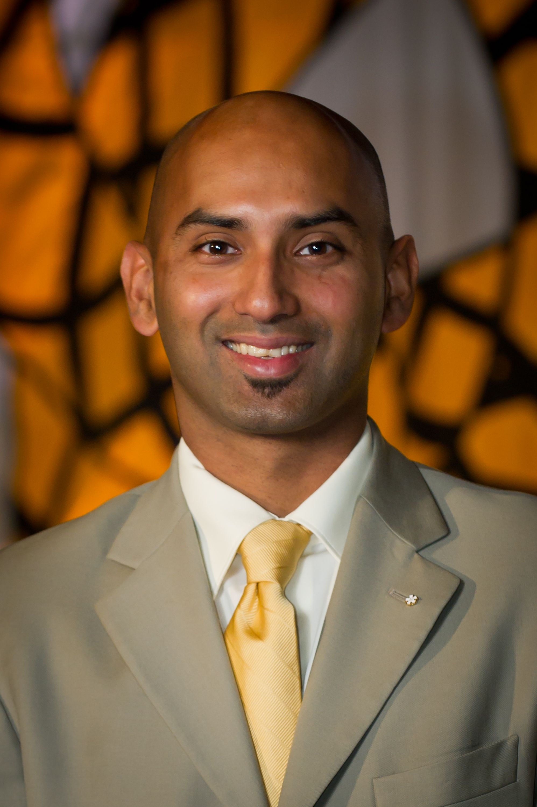

Richmond, Virginia
11+ years delivering enterprise technology across healthcare, manufacturing, legal tech, and consulting. Expert in ERP & EHR implementations, M&A integrations, and AI-augmented project execution.
IT Enterprise Project Manager
Managed a portfolio of 6 concurrent M&A integration projects spanning manufacturing and software company acquisitions across the Americas and EMEA regions. Leveraged Generative AI tools to automate dashboards and reporting, improving project visibility and reducing administrative overhead.
Project Manager
Led delivery of ERP and financial software implementation projects for mid-to-large law firms supporting 70–550 attorneys. Independently managed 160 client service projects generating $1.5M in revenue while maintaining delivery quality, budget alignment, and client satisfaction.
Project Manager
Led cutover planning and execution for enterprise Workday ERP and Epic EHR implementations impacting 13,000+ employees. Directed a 100+ workstation command center coordinating 400+ IT professionals during Epic go-live to ensure issue resolution and operational continuity.
Project Manager / Product Manager
Led Agile project and product delivery for client engagements, coordinating sprint planning, backlog prioritization, and MVP development between technical and business teams. Leveraged Power BI to build dashboards and reporting insights that supported stakeholder decision-making.
Senior Consultant
Managed technical EHR implementation projects for behavioral health organizations across multiple states. Led SOW coordination for a large-scale shared EHR implementation spanning four mental health agencies. Developed SQL queries and technical reports to support implementation reporting.
Director of Information Technology
Led enterprise IT modernization including cloud migrations, infrastructure upgrades, and systems implementations. Managed vendor relationships, technology contracts, budgets, and technical roadmaps aligned with organizational priorities.
Project Delivery
Enterprise Platforms
Tools & Reporting
AI & Automation
Enterprise delivery,
AI-augmented.
I'm a Technical Project Manager with deep experience in healthcare technology, M&A integrations, and legal tech. I specialize in leading large-scale enterprise initiatives — from planning through cutover — and applying Generative AI to sharpen delivery execution, automate reporting, and improve project visibility.
I've led go-lives impacting 13,000 employees, managed 160 concurrent client engagements, and built delivery playbooks used across integration teams. Whether the environment is Agile, Waterfall, or hybrid, I focus on clarity, accountability, and outcomes.
Nicholls State University
BS in Mathematics
BS in Computer Science
Open to senior technical project delivery roles.